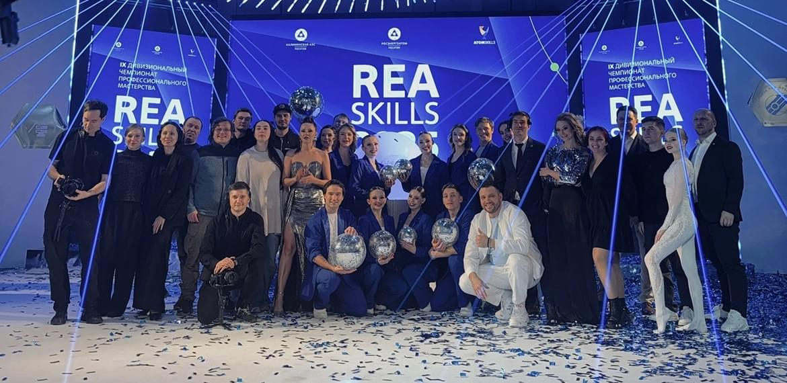

Принципы работы
Мероприятия любого масштаба: церемонии, стадионные, спортивные, музыкальные и другие шоу, патриотические программы, мюзиклы, театрализованные концерты, фестивали, квартирники и всё, что можно придумать и воплотить. От задумки до реализации.
Нам достаточно просто поговорить с вами и понять основные задачи, идеи и цели, ради достижения которых создаётся мероприятие. Обсудим атмосферу проекта и его эмоциональное наполнение. Далее мы самостоятельно разработаем концепцию, и обсудим её с Вами. Получим обратную связь, внесём корректировки и начнём разработку подробного сценария. Расскажем, как это всё воплотить и реализовать, подключим специалистов команды и партнёров для разработки деталей мероприятия, рассчитаем сметы (оптимизируемся), предоставим схемы и варианты реализации. Проведём кастинг артистов, соберём хореографические, музыкальные, цирковые и другие коллективы. После утверждения концепции подберём или напишем музыкальную партитуру действия, подготовим сценарии для видеоконтента, разработаем эскизы декорационного оформления и техническую документацию (оптимизируемся) и организуем репетиционный, постановочный процесс. И после того, как сценарий написан и согласован, музыкальное оформление готово, артисты и службы понимают свои задачи...начинается монтаж технической части, приезжают декорации, несколько недель, дней (или часов) репетиций, прогон, еще один прогон, генеральный прогон... церемония/шоу/концерт .... финал...аплодисменты зрителей, эмоции... и ещё несколько месяцев обсуждения того, как это было!

Командная работа
«Режиссура — это командная работа. Для реализации большого проекта требуется максимальная вовлеченность большого числа специалистов, и каждый должен заниматься своим делом!
- Техникой должен заниматься технический директор
- Декорациями — сценографы и художники
- Логистикой, списками, документацией — менеджеры
- Музыкальным оформлением — музыканты
Если каждый человек работает на своем месте, чётко знает все детали своей работы и выполняет поставленные задачи, тогда всё сложится. Именно поэтому «Первый план» — это в первую очередь команда. Это не один человек и не группа людей, а профессионалы, понимающие друг друга с полуслова. Это позволяет работать в абсолютно разных условиях: как временных, так и финансовых, даже погодных... Мы умеем принимать решения и нести за них ответственность!
Понимание
Мы понимаем, для чего проводятся мероприятия, знаем о важности не просто красивой картинки, но и соблюдения этики и эстетики. Всё, что происходит на сцене, должно раскрывать замысел и реализовывать поставленные задачи, а не быть просто украшением или осуществлением фантазий режиссёра. Зритель должен понимать, что, зачем и почему происходит. Наша команда организовала большое количество мероприятий с участием представителей власти нашей страны и её регионов, высшего руководства разных государств. Поэтому мы чётко понимаем важность протокола и политических задач, относимся к официальной части любого мероприятия с особым вниманием
Уникальность
Как и у любой творческой команды, у нас есть свой почерк и свои принципы построения сценического действия. Мы работаем над созданием атмосферы, в которой живут наши артисты, и в которую мы приглашаем зрителя. Уже давно все устали от простых концертов, где ведущие проговаривают подводку к следующему номеру, и кто-то просто поёт песни. Даже на больших стадионных шоу мы стараемся добавить театральности и жизни на сценическом пространстве. Шоу, концерт, церемония не должны быть лекцией с рассказом о событии! Если идеи доносить до зрителя через сердце, а не через голову, воздействуя на эмоции, зритель запомнит этот проект надолго. Он выйдет после мероприятия другим человеком: с ощущением гордости за свою страну, свой город или предприятие, с желанием создавать, воплощать, любить и идти к своей мечте. Только так наша работа имеет смысл!
Ответственность
Мы несем ответственность за весь проект, от начала и до конца, стараемся вникнуть во все производственные процессы, даже в те, которые не касаются нас напрямую. Режиссёрская команда несет ответственность за всё. Именно поэтому «Первый план» старается работать с проверенной командой технических специалистов, декораторов, организаторов и артистов. Это люди, от работы и вовлеченности которых зависит реализация всех идей и задумок, те самые эмоции зрителя, о которых мы так много говорим. В наших проектах часто задействованы одни и те же артисты не потому, что других нет, а потому, что это команда, как театральная труппа, которая понимает режиссёра и несет перед ним ответственность. Наша команда понимает ресурс артиста, его возможности и сильные стороны
Наше знакомство с клиентами и заказчиками начинается с выстраивания партнерских взаимоотношений. Невозможно создать что-то творческое по принципу: вы исполнитель, вы нам должны... Нет, это общее дело, работа над общей историей, работа на единый результат, основанная на доверии. Так же и во взаимодействии внутри команды: со службами, режиссёрской группой, артистами и подрядчиками. Наша работа — это наша жизнь, мы дружим со всеми, с кем работаем! Всё это не отменяет споров (в них рождается истина), отстаивания своих идей и принципов, а также контроля качества исполнения всех этапов работы
Первый план" постоянно работает в разных регионах. Не всегда есть возможность лететь всем составом, везти артистов, а уж тем более команды подрядчиков, поэтому мы много знакомимся и работаем со специалистами «на местах». Мы умеем выстраивать взаимоотношения с самыми разными командами, обсуждать возможности, делиться опытом. С каждым годом количество наших друзей и партнеров в разных регионах увеличивается. И мы не хотим останавливаться на достигнутом. Команда «Первого плана» постоянно учится, развивается, повышает профессиональные навыки, ищет новые решения. Каждый человек в команде является профессионалом в своем направлении, при этом разбирается в работе своих коллег. Как можно ставить задачу специалисту, не понимая механику её реализации (хотя бы примерную)? От каждого проекта мы стараемся получить новый опыт, реализовать новые идеи и попробовать новые решения, что позволяет нам расти и развиваться в нашем деле.